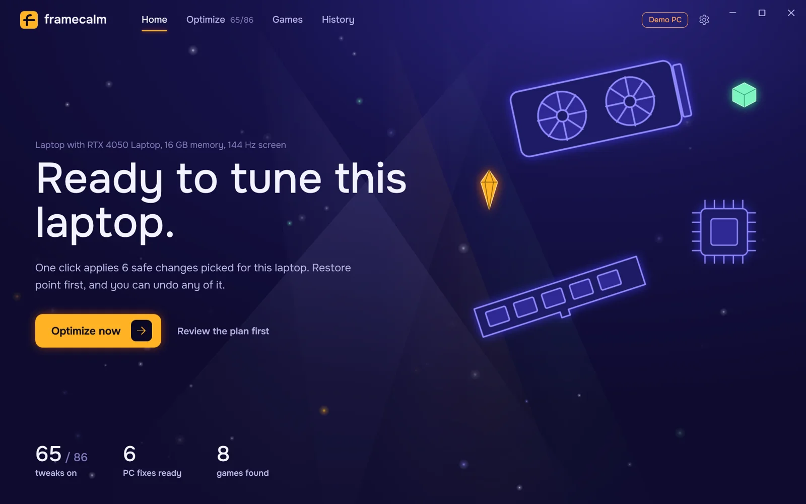
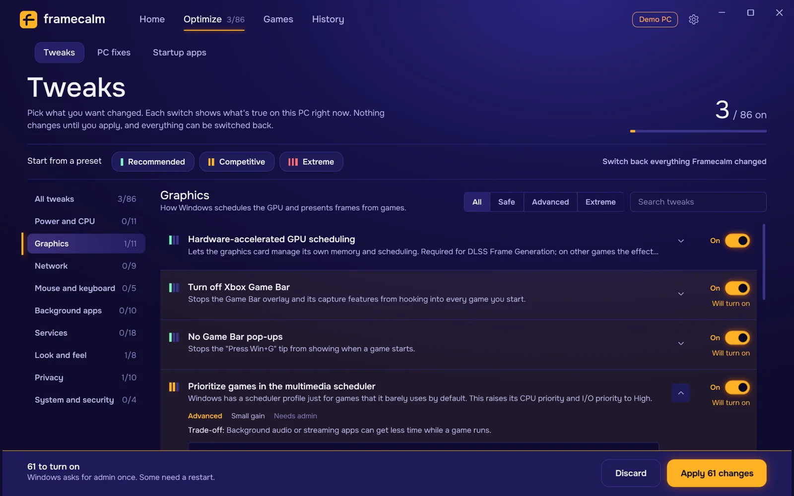
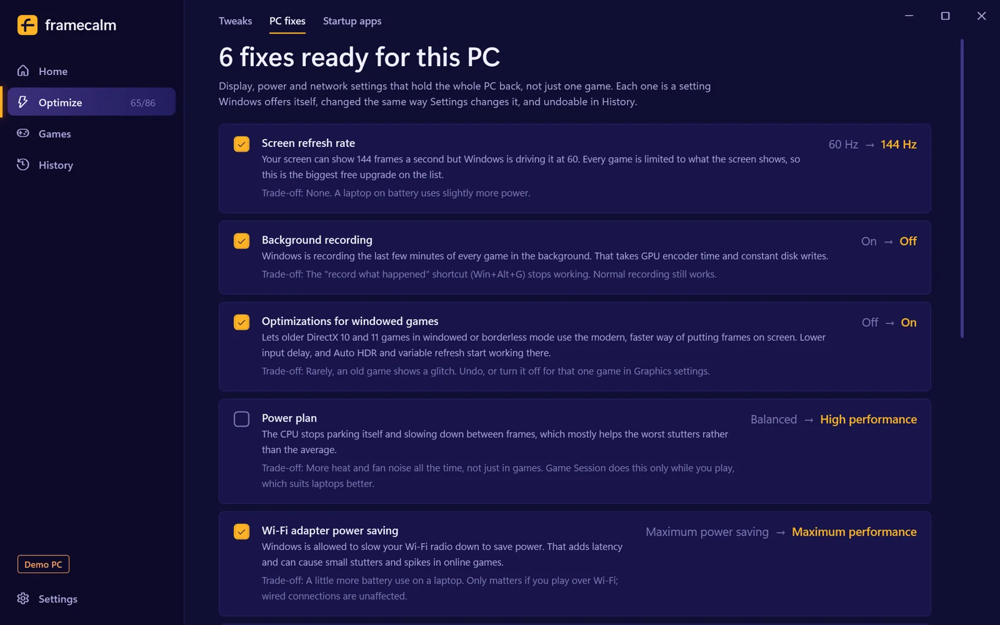
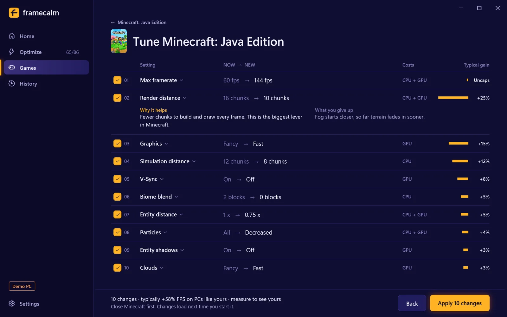
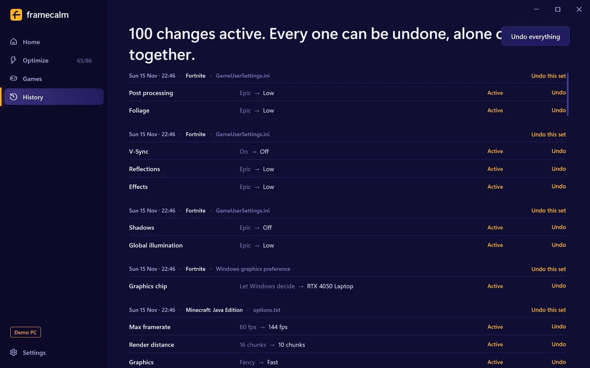

11 tweaks
Power and CPU
How hard the processor is allowed to work, and what Windows switches off to save energy.
- Keep USB devices awake
- Turn off Fast Startup
- Keep the CPU at full speed
- Turn off core parking
2 safe8 advanced1 extreme
One click builds a plan for your PC. Or pick from 87 tweaks yourself, from safe to extreme. Every change is explained, and every one can be switched back.
The real app, recorded on a demo PC
Press Optimize on the right to see it work. Framecalm looks at what you have, a laptop or a desktop, which graphics card, what's already set, and builds a list of fixes and tweaks that suit it. Each line says why it's there. Untick anything, then apply.
Every one shows the exact value it changes. See all 87, with their registry keys.
11 tweaks
How hard the processor is allowed to work, and what Windows switches off to save energy.
2 safe8 advanced1 extreme
11 tweaks
How Windows schedules the GPU and presents frames from games.
3 safe8 advanced0 extreme
9 tweaks
Latency and background bandwidth: what else is using your connection while you play.
2 safe7 advanced0 extreme
5 tweaks
Raw, predictable input with no pop-ups that steal focus mid-game.
5 safe0 advanced0 extreme
10 tweaks
Apps and features that run when you didn't ask them to.
8 safe1 advanced1 extreme
19 tweaks
Windows services you may not need. Each one is switched to Disabled, never deleted.
9 safe9 advanced1 extreme
8 tweaks
Animations and effects that make the desktop feel slower than it is.
6 safe2 advanced0 extreme
10 tweaks
Ads, suggestions and data collection. Small speed effect, big quiet effect.
9 safe1 advanced0 extreme
4 tweaks
Deep changes to how Windows protects itself. Real gains on some CPUs, real trade-offs on all of them.
0 safe2 advanced2 extreme
Try it. Each switch shows the exact registry value or power setting it changes. Nothing here touches your PC.
powercfg USB settings / USB selective suspend = 0powercfg SUB_PROCESSOR / PROCTHROTTLEMIN = 100powercfg SUB_PROCESSOR / CPMINCORES = 100HKLM\SYSTEM\CurrentControlSet\Control\Power\PowerThrottling\PowerThrottlingOff = 1HKLM\SYSTEM\CurrentControlSet\Control\GraphicsDrivers\HwSchMode = 2HKLM\SOFTWARE\Microsoft\Windows NT\CurrentVersion\Multimedia\SystemProfile\Tasks\Games\Priority = 6 and 2 moreHKCU\Software\Microsoft\Windows\CurrentVersion\GameDVR\AppCaptureEnabled = 0 and 2 moreHKCU\System\GameConfigStore\GameDVR_FSEBehaviorMode = 2 and 2 moreHKLM\SOFTWARE\Policies\Microsoft\Windows\DeliveryOptimization\DODownloadMode = 0HKLM\SOFTWARE\Microsoft\Windows NT\CurrentVersion\Multimedia\SystemProfile\NetworkThrottlingIndex = 0xFFFFFFFFHKLM\SYSTEM\CurrentControlSet\Services\Tcpip\Parameters\Interfaces\{each network adapter}\TcpAckFrequency = 1 and 1 moreHKLM\SOFTWARE\Policies\Microsoft\Windows\WindowsUpdate\ExcludeWUDriversInQualityUpdate = 1HKCU\Control Panel\Mouse\MouseSpeed = "0" and 2 moreHKCU\Software\Microsoft\Windows\CurrentVersion\BackgroundAccessApplications\GlobalUserDisabled = 1HKLM\SYSTEM\CurrentControlSet\Services\SysMain\Start = 4 (disabled)HKLM\SYSTEM\CurrentControlSet\Control\DeviceGuard\EnableVirtualizationBasedSecurity = 0 and 1 moreWhere this PC stands. A gauge of what's on, where your plan takes it, what's up next and your games.

87 tweaks in nine categories. Safe, Advanced and Extreme on every row, with the value it writes one click away.

What Windows gets wrong on its own: a 144 Hz screen at 60, Wi-Fi power saving, background recording, startup apps.

Tunes each game's own settings for your hardware, shows exactly what changes first, and measures the difference.

Every value with the original next to it. Undo one, a group, or everything.

Finds them in Steam, Epic, Riot, Battle.net, the Xbox app, Minecraft and Roblox, then sets each game's own graphics settings for your hardware.


The same four steps for every tweak, fix and game setting.
Before the first change that needs admin, Windows makes a restore point. One prompt covers the whole batch.
The current value is written to a journal on disk before anything is touched.
The new value is written, then read back. If it doesn't match, everything in the batch goes back.
Switch any tweak off, or undo from History, and the original value comes back.
Framecalm never touches game files, game memory or anti-cheat, and the main app runs without admin. Only a small helper elevates, and it refuses any registry key that isn't in the published list.
Some changes do, on some PCs: fixing a screen stuck at 60 Hz, pinning a game to the right GPU, turning off Memory Integrity. Most tweaks are about steadier frame times, lower input lag, or less going on in the background. Each one says how big a difference to expect, and Benchmarks lets you measure it on your own PC.
It shows you a list first: PC fixes and tweaks picked for your hardware, each with a reason. Nothing changes until you press Apply, and you can untick any line.
Safe tweaks are safe on any PC. Advanced ones trade power use or a convenience. Extreme ones switch off Windows protections, and the app asks you to confirm them. Whatever you pick, a restore point comes first and every value can be switched back.
No. Framecalm changes Windows settings, not games. It never touches game files, memory, launch options or anti-cheat software.
Most performance settings live in parts of the registry only an administrator can change. The main app runs as you. A small helper asks for admin once per batch and only accepts keys from the published list.
No. Framecalm is free, with no account, no ads and no telemetry.
Yes. Framecalm is open source under the MIT license. The code, the full tweak catalog and the release builds are on GitHub, so you can check exactly what it does before you run it.